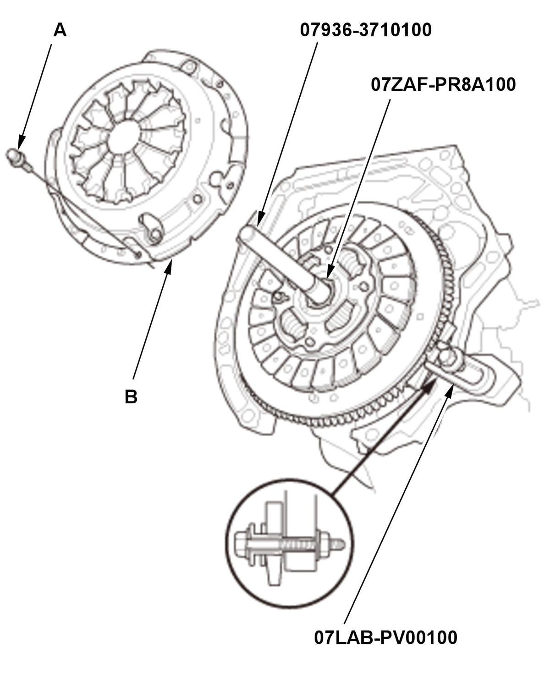
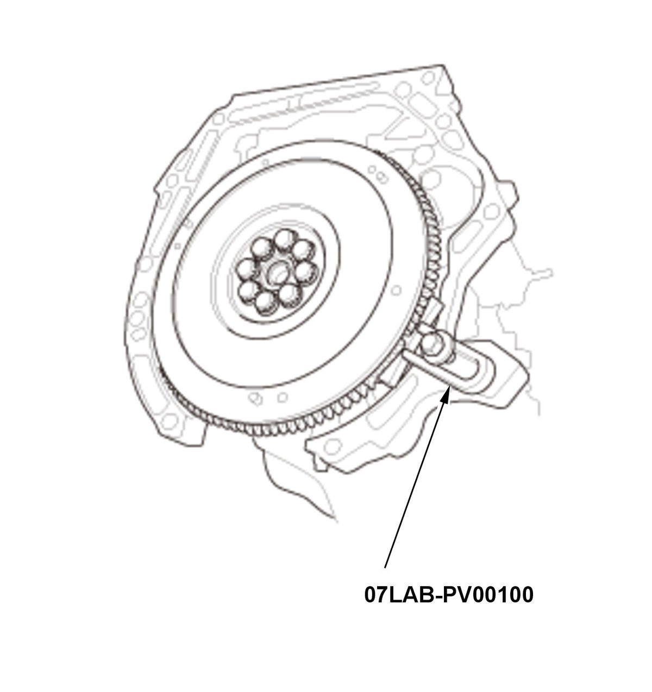

Clutch Removal and Installation (K20C2 (M/T)) (2016 2017 2018 2019 2020): Removal
Engine Side
- Transmission - Remove
- Height of Diaphragm Spring Finger - Check
1. Check the evenness of the height of the diaphragm spring fingers using the clutch alignment disc, the clutch alignment shaft, the remover handle, and a feeler gauge (A). If the height difference is more than the standard, replace the pressure plate. Standard (New): 0.6 mm (0.02 in) max. - Pressure Plate - RemoveFig 1: Loosening Pressure Plate Mounting Bolts In Crisscross Pattern In Several Steps (K20C2 - M/T - 2016-20)

Courtesy of HONDA, U.S.A., INC.1. Install the ring gear holder, the remover handle, and the clutch alignment shaft. 2. To prevent warping, loosen the pressure plate mounting bolts (A) in a crisscross pattern in several steps, then remove the pressure plate (B).
- Pressure Plate - Inspect
1. Inspect the fingers of the diaphragm spring (A) for wear at the release bearing contact area. 2. Inspect the pressure plate surface (A) for wear, cracks, and burning. - Clutch Disc - Remove
1. Remove the clutch disc (A), the clutch alignment shaft, and the remover handle. - Clutch Disc - Inspect
1. Inspect the lining of the clutch disc for signs of slippage or oil. If the clutch disc looks burnt or is oil soaked, replace the clutch disc. If the clutch disc is oil soaked, find and repair the source of the oil leak.
2. Measure the clutch disc thickness. If the measurement is less than the service limit, replace the clutch disc.
Standard (New): 7.55-8.15 mm (0.2972-0.3209 in) Service Limit: 6.35 mm (0.2500 in) 3. Measure the depth of the rivet from the clutch disc lining surface (A) to the rivets (B) on both sides. If the measurement is less than the service limit, replace the clutch disc.
Standard (New): 1.15-1.75 mm (0.0453-0.0689 in) Service Limit: 0.85 mm (0.0335 in) - Flywheel - Inspect
1. Inspect the ring gear teeth (A) for wear and damage. 2. Inspect the clutch disc mating surface (B) on the flywheel for wear, cracks, and burning.
- Crankshaft Pilot Bushing - Check
- Flywheel - RemoveFig 2: Loosening Flywheel Mounting Bolts In Crisscross Pattern In Several Steps (K20C2 - M/T - 2016-20)

Courtesy of HONDA, U.S.A., INC.1. Loosen the flywheel mounting bolts in a crisscross pattern in several steps. Remove the bolts, then remove the flywheel and the ring gear holder.

Transmission Side
- Transmission - Remove
- Release Bearing - Remove
1. Remove the release fork boot (A). 2. Remove the release fork (B) from the clutch housing (C) by squeezing the release fork set spring (D). Remove the release bearing (E).
- Release Bearing - Check
1. Check the play of the release bearing by spinning it by hand. If there is excessive play or noise, replace the release bearing.
NOTE: The release bearing is packed with grease. Do not wash it in solvent.